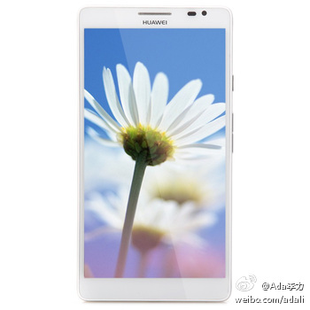

选这个手机的理由：1。电池是4000毫安，耐用；2。不想换移动号码就可使用3G；3。6.1寸大屏，可以当Pad用，而且，这款手机号称是给女性用的，我估计是搁脸旁打电话，容易显脸小的缘故。华为（HUAWEI）Ascend Mate 3G手机（白色）TD-SCDMA/GSM，￥ 2688。网页链接 
今天盘点了几个帐户，几个发现：1。有个基金网站我三年都没登录过了，留的邮寄地址还是以前的住处，赶紧修改；2。股票亏得很掺，基金能持平，收益最好的是一个为女儿做的定投基金。- 其实，这十几年，什么收益都比不上房产，但错过了就是错过了。
 网页链接
网页链接